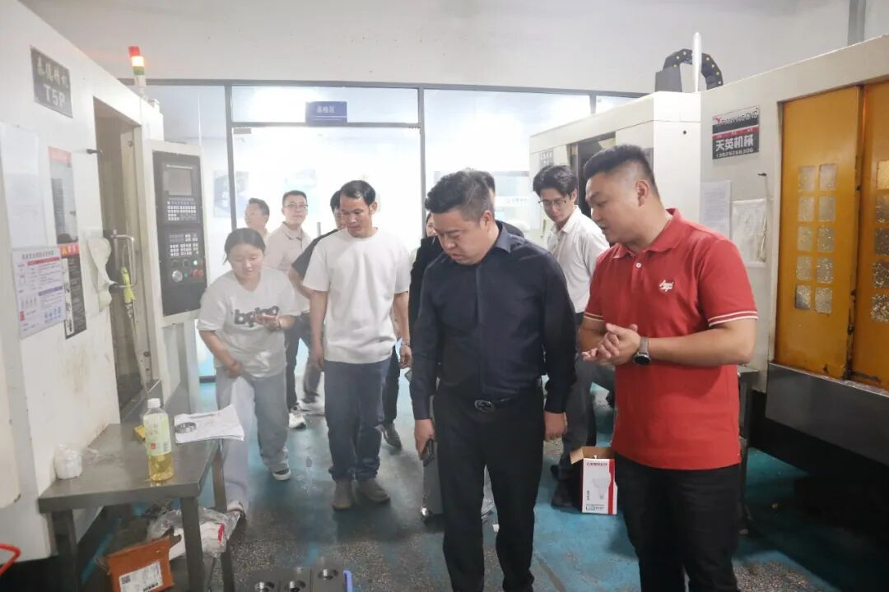
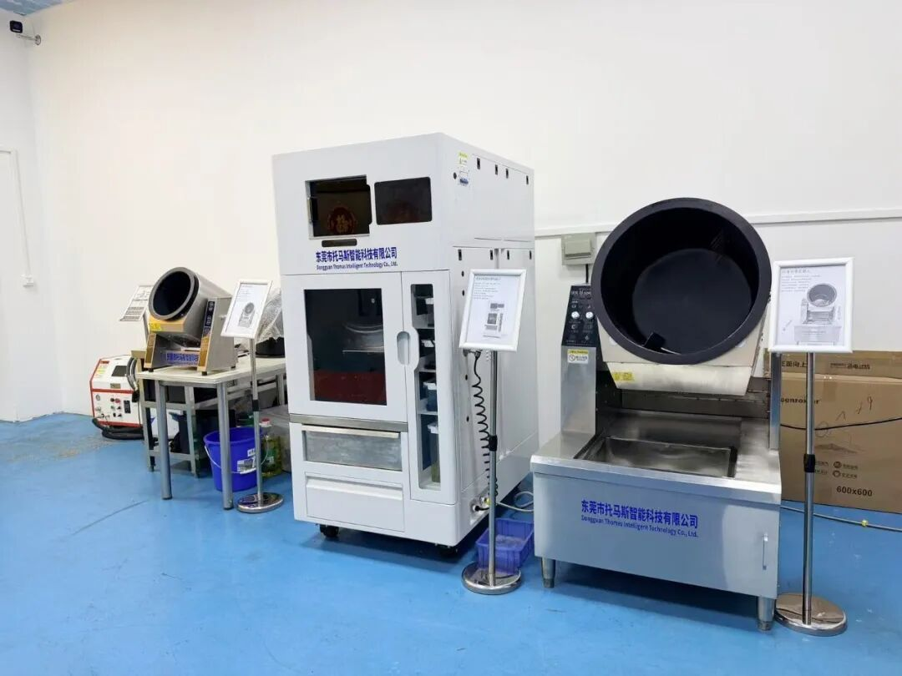
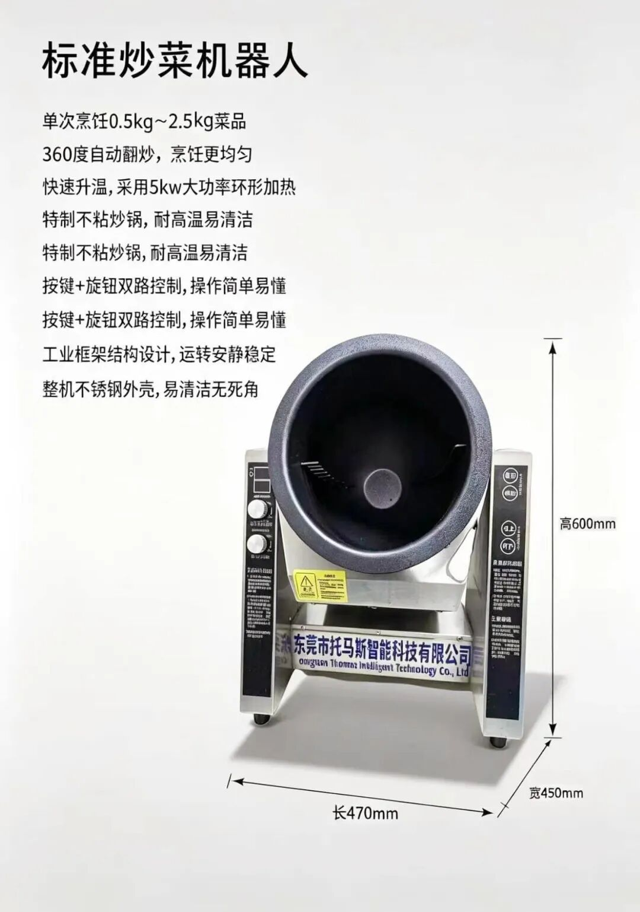
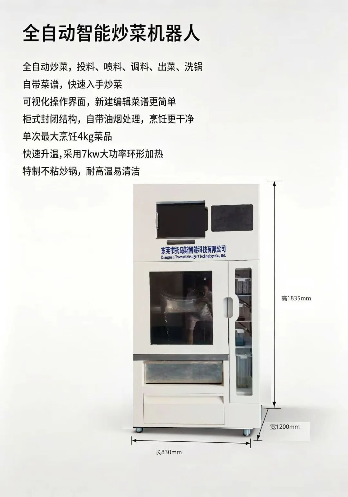
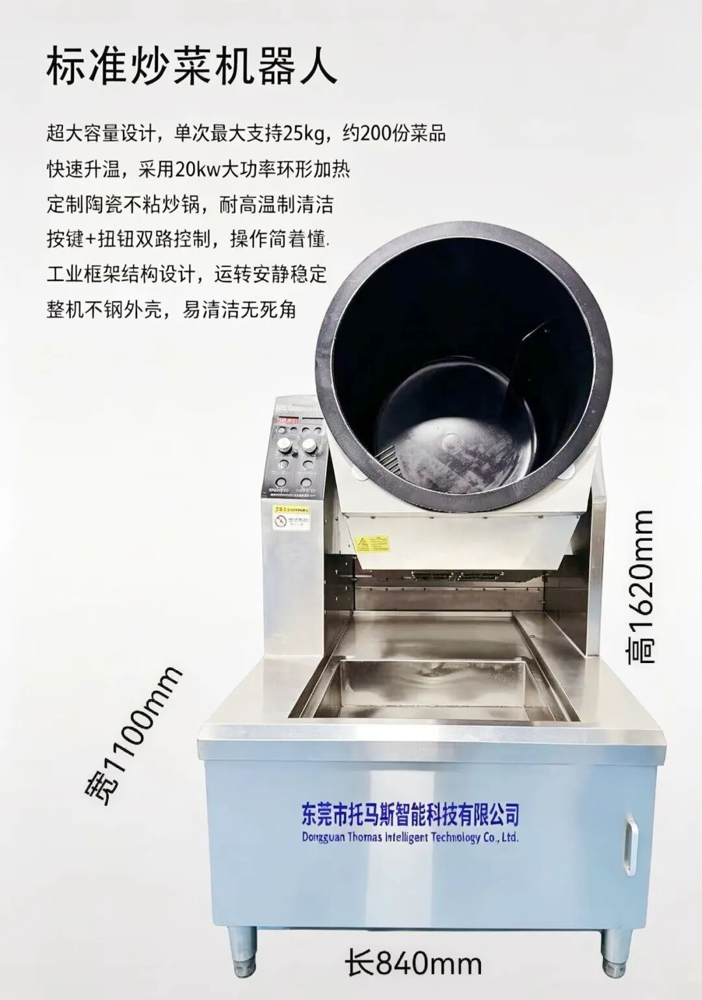
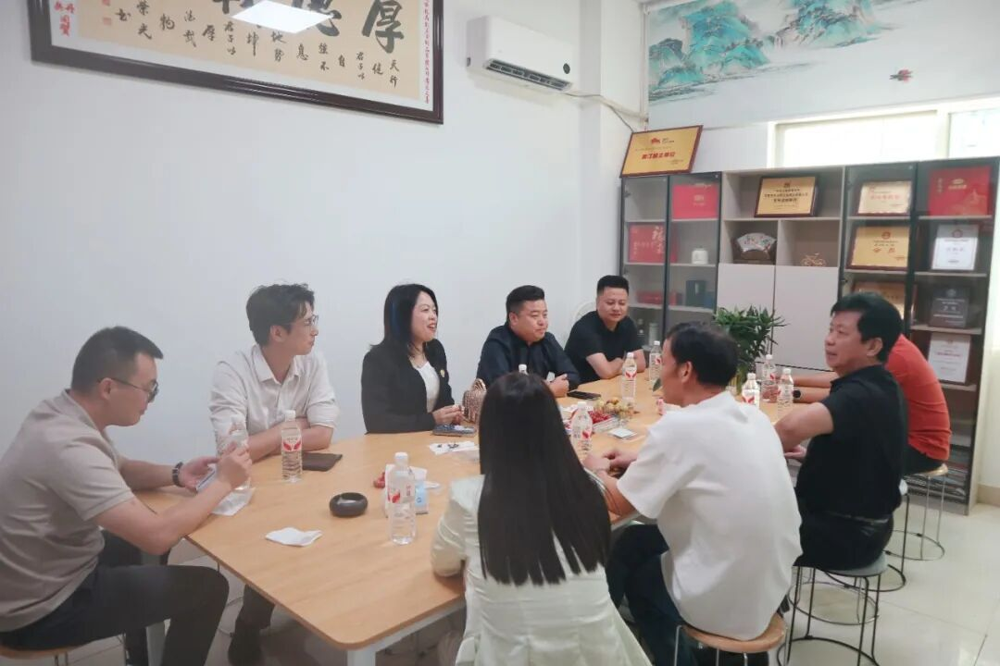
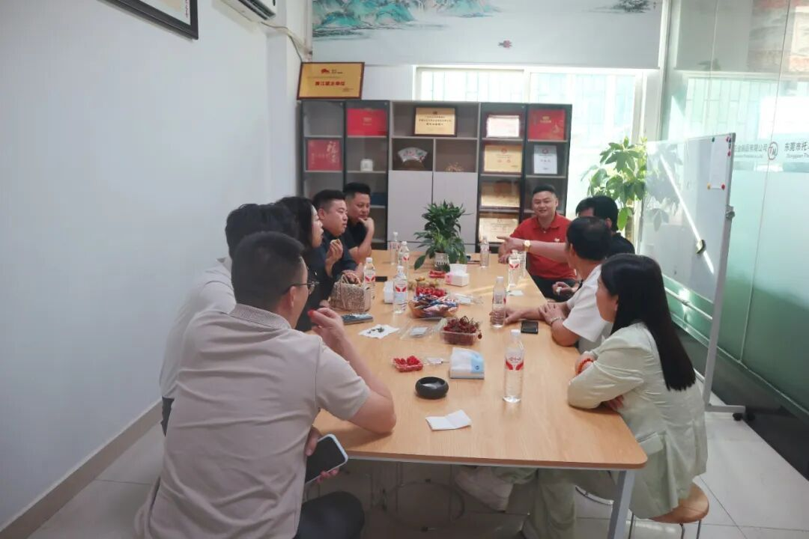
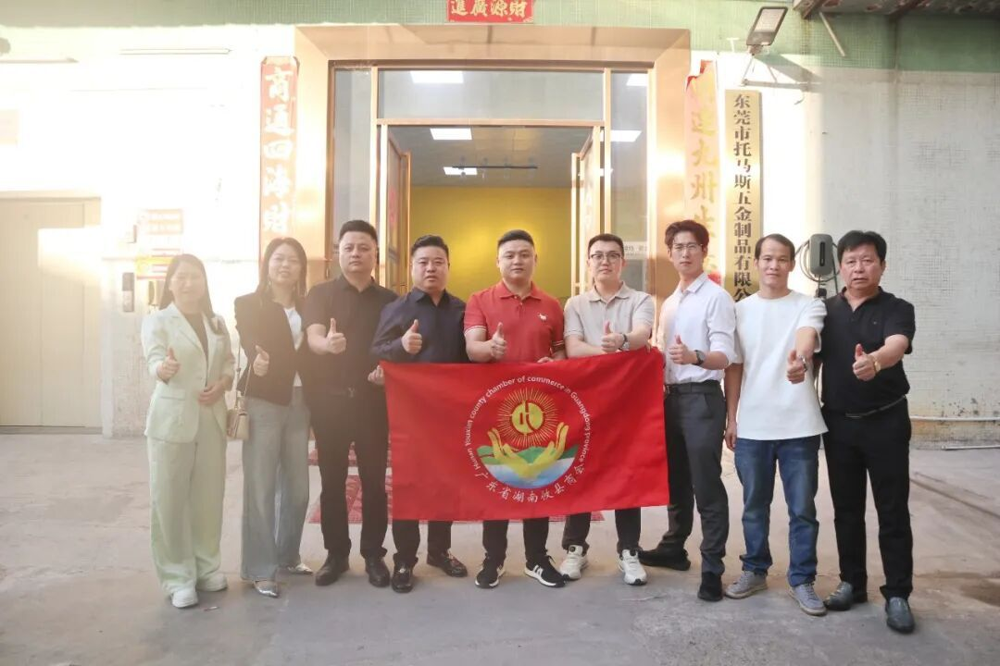

五金筑基强实业，智厨破局启新程。
2026年11月9日下午，秋风送爽。广东省湖南攸县商会会长张成建率商会成员赵子云、刘涵、许雅婷、洪权、周生生、郝海瑞及秘书处人员一行10人，再次走进位于东莞市黄江镇的东莞市托马斯五金制品有限公司，开展实地走访调研。
今年5月26日，商会常务副会长赵子云曾率队首次走访托马斯，见证了这位98后年轻企业家张凯在精密五金制造领域的实干与锋芒。时隔不到半年，商会一行再度到访，旨在探寻企业从传统制造向智能装备转型升级的新进展，为会员企业链接资源、共谋发展。
从精密五金到智能烹饪，跨界破局餐饮痛点

走进托马斯公司，现代化的研发室与整洁有序的生产车间映入眼帘。作为一家成立于2021年的企业，托马斯五金凭借在精密加工、模具设计、电子元器件及自动化设备领域的深厚积累，形成了稳定的精密五金制造基本盘。
当前，餐饮行业正面临厨师招聘难流失率高、人工成本持续攀升、出品口味不稳定三大痛点。人工炒菜高度依赖厨师经验，不同批次、不同时段口味差异大，难以标准化复制。托马斯公司瞄准这一行业痛点，依托自身五金制造与自动化技术优势，向商用智能烹饪装备赛道跨界进军，推出托马斯智能炒菜机器人系列产品。

在张凯总经理的陪同下，走访团深入产品展示区，近距离观摩了托马斯三大产品系列：

260型标准款：台式轻巧设计，单次烹饪0.5至2.5公斤菜品，采用5kW大功率环形加热，360度自动翻炒，按键加旋钮双路控制，操作简单易上手，适合小型档口使用。

360型全自动款：柜式全封闭结构，单次最大烹饪4公斤菜品。这款智能大厨能全自动完成投料、喷料、调料、出菜甚至洗碗，自带菜谱库，可视化操作界面让新建菜谱简单直观，并自带油烟处理，烹饪更干净。

550型大容量款：商用大容量设计，单次最大支持25公斤、约200份菜品，配备20kW大功率环形加热，超大火力快速升温，媲美明火灶，定制陶瓷不粘炒锅耐高温更易清洁，面向大型食堂与中央厨房场景。
从小型档口到大型中央厨房，托马斯智能为不同规模餐饮场景提供了精准匹配的自动化方案。座谈交流中，张成建会长对托马斯公司从传统五金制造向智能烹饪装备的成功转型给予高度评价，并勉励企业继续深耕研发、做精产品。

随后，走访团成员结合各自行业经验，围绕产品迭代、渠道拓展、商业模式及供应链优化等畅所欲言。大家一致认为，智能炒菜机器人市场前景广阔，托马斯具备五金精密制造与自动化技术双优势，有望在餐饮标准化、智能化浪潮中抢占先机。

走访尾声，张凯总经理对商会一行的到来表示衷心感谢。他表示，商会的关怀与指导是企业前行的动力，托马斯智能将秉承工业级品质标准，不断打磨产品，致力于成为商用智能炒菜机器人领域的领军品牌。

此次走访，不仅见证了东莞市托马斯五金制品有限公司在传统五金领域的稳健基本盘，更看到了其在智能烹饪机器人赛道上的锐意进取。广东省湖南攸县商会将一如既往地关注会员企业发展，通过走访调研、资源对接、宣传推广等多种形式，助力会员企业做大做强，携手书写在粤攸商高质量发展的新篇章。
业务联系
公司名称：东莞市托马斯五金制品有限公司
公司地址：广东省东莞市黄江镇合路村创业二路许宏产业园C栋一楼
联系方式：张凯（151 1254 4210）